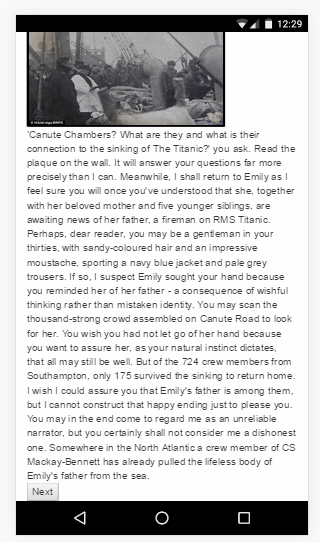

Story Places Help
Welcome to Story Places - this Help Page should guide you to using our system to read and enjoy location aware stories.
Each story has a page like this:
Here you can see the author and the 'readings' for that story. Each reading saves where you are in the story and what you've read so far, you create a reading to begin a story and you can create additional readings if you would like to re-read a story or if you would like someone else to read it without losing your place. To create a new reading press the + button and then press the reading itself to open the story.
When you start a story you will see a screen a bit like this:
This screen shows you the pages you can access at the moment and guides you to the locations you need to visit in order to read those pages. Sometimes there will be only one page available to you, but at other times you may have a range of pages to choose from which can be scrolled through. You can walk to the location of any page available to you - feel free to choose!
The Map at the top of the screen will centre on your current location and will indicate the position of locations you have to travel to in order to read pages. Note - sometimes the pins indicating where you need to go may be off the screen on the map - which can be scrolled and zoomed. The pages themselves will also sometimes have a small textual clue or direction in italics to help guide you to the right place.
When you get to the location for a page its entry on the list will turn green in the list like this:
This means you can now open the page and read it by clicking on the page. Note - not all pages in all stories require you to travel to a location and you may find some available all the time regardless of where you are.
When you open a page it will display the content of the page a little something like this:

There may be images and text on a page all of which will have been preloaded when you started the reading. There may also be audio on a page in which case you will see the audio player like this:
If you would like to listen to the audio clip press play to begin the audio. Note audio and external links to other pages are not pre-downloaded and as such will need to use a mobile data connection to download the contents.
When you are finished reading a page click the next button at the bottom - this will then return you to the previous screen and show you the new pages you have to choose from. Note - pressing back on your phone/browser will not do this, you need to press the next button to progress the story.
When you get to the last page of the story a finish button will appear which you can use to end the story. We would greatly appreciate your feedback on this new form of storytelling and on the finish page there will be a link to a survey which if you have time for you can let us know how you found your experience.
If you would like to finish your story early and answer the survey before you get to the end you can do this by clicking the menu button in the top right and selecting finish early.
Thank you for using story places - if you have any questions feel free to contact us by emailing me at cah07r@ecs.soton.ac.uk.